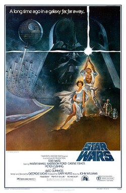

Star Wars (1977)
Source Card

Photo

Star Wars is a 1977 American epic space opera film written and directed by George Lucas, produced by Lucasfilm Ltd. and released by Twentieth Century-Fox. It is the first film in the Star Wars franchise and the fourth chronological chapter of the "Skywalker Saga". Set in a fictional galaxy under the rule of the tyrannical Galactic Empire, the film follows a resistance movement, called the Rebel Alliance, that aims to destroy the Empire's ultimate weapon, the Death Star. When the rebel leader Princess Leia is captured by the Galactic Empire, Luke Skywalker acquires stolen architectural plans for the Death Star and sets out to rescue her while learning the ways of a metaphysical power known as "the Force" from the Jedi Master Obi-Wan Kenobi. The cast includes Mark Hamill, Harrison Ford, Carrie Fisher, Peter Cushing, Alec Guinness, Anthony Daniels, Kenny Baker, Peter Mayhew, David Prowse, and James Earl Jones.
External Links
This page aggregates references to the source material behind Name Lore entries.